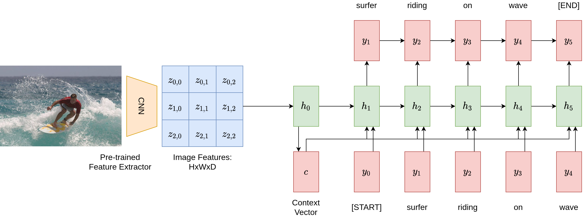
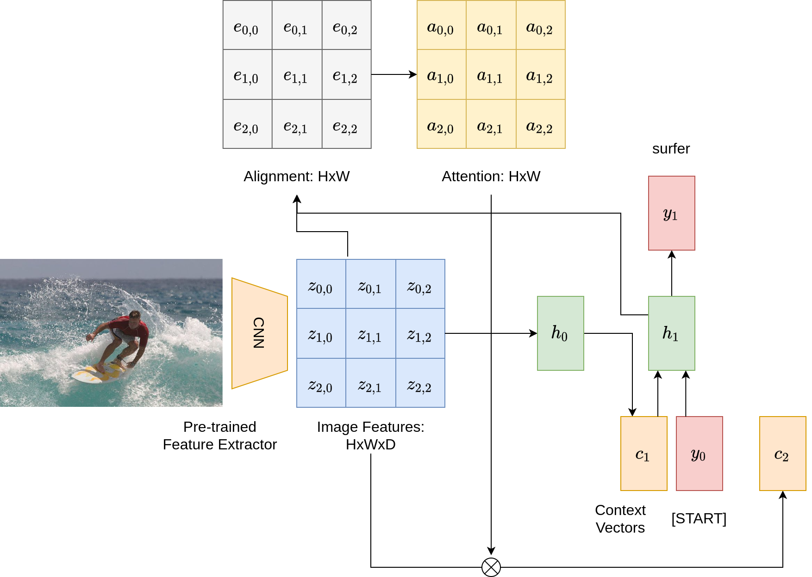
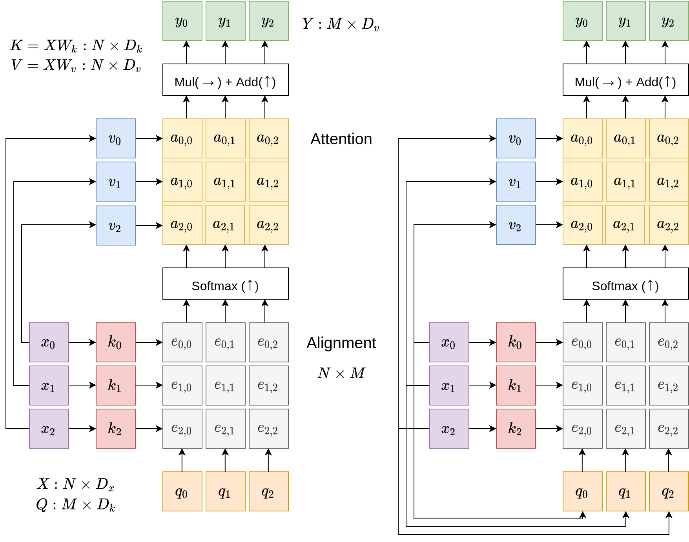
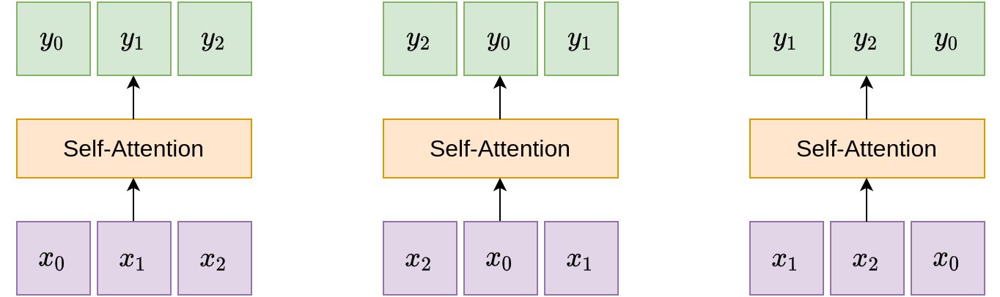
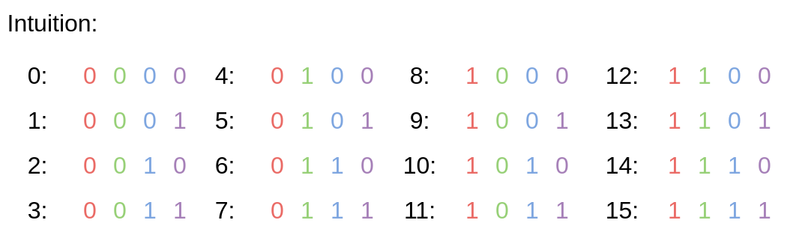
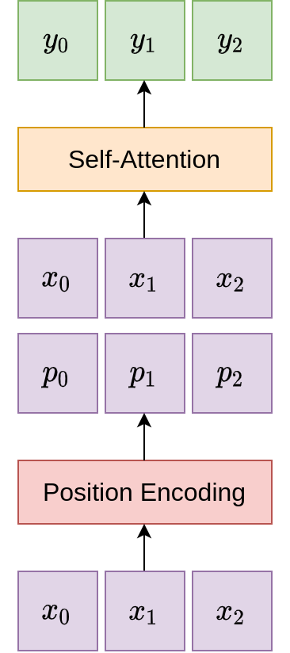
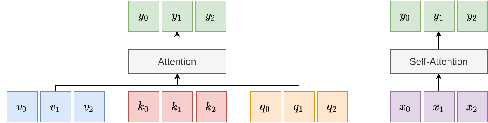
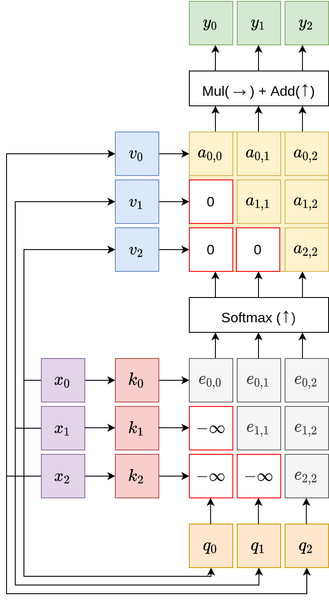
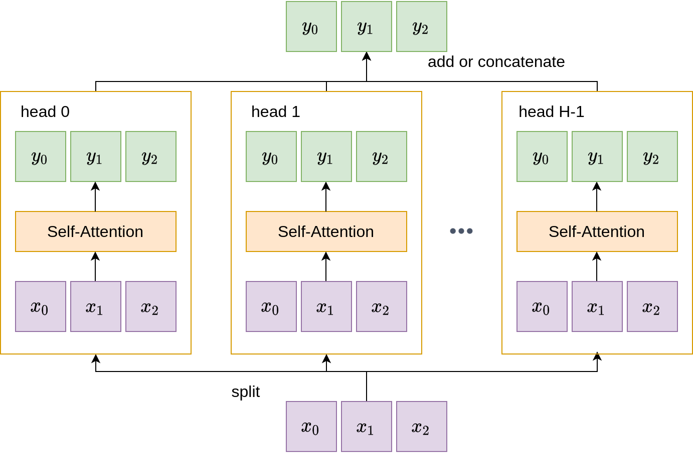

Aula 08 · Atenção e Transformers
Atenção
⚠️ Este conteúdo é uma tradução para português, gerada automaticamente por IA, a partir do material original em inglês do curso CS231n (Stanford University). Consulte o link "Fonte original" abaixo para o texto original.
Fonte original (inglês): Attention · CS231n, Stanford University ↗
Nas seções anteriores, discutimos pilares do deep learning moderno, como Redes Neurais Convolucionais e Redes Neurais Recorrentes. Esta seção é dedicada a mais uma camada, a camada de atenção, que forma uma nova primitiva para aplicações modernas de Visão Computacional e PLN.
Motivação
Para motivar a camada de atenção, vamos olhar para uma aplicação de exemplo, a legendagem de imagens, e ver qual é o problema de usar apenas CNNs e RNNs nela.
A figura abaixo mostra um pipeline que aplica essas redes a uma imagem para gerar uma legenda. Primeiro ele usa um extrator de características de uma CNN pré-treinada para resumir a imagem, resultando num vetor de características da imagem \(c = h_0\). Depois, aplica uma rede recorrente para gerar tokens repetidamente, um a cada passo. Após cinco passos de tempo, o modelo de legendagem obtém a frase: "surfer riding on wave" ("surfista pegando onda").

Qual é o problema aqui? Note que o modelo depende inteiramente do vetor de contexto \(c\) para escrever a legenda: tudo o que ele quer dizer sobre a imagem precisa estar comprimido nesse vetor. E se quisermos ser bem específicos e descrever cada mínimo detalhe da imagem, como a cor da camisa do surfista ou a direção das ondas? Obviamente, um vetor de tamanho finito não consegue codificar todas essas possibilidades, especialmente se o número desejado de tokens chegar às centenas ou aos milhares.
A ideia central da camada de atenção vem do sistema de atenção visual humano: quando recebemos uma cena visual e tentamos entender uma região específica dela, focamos a visão nessa região. A camada de atenção simula esse processo e presta atenção a diferentes partes da imagem enquanto gera as palavras que a descrevem.
Com a atenção em jogo, um diagrama semelhante do pipeline de legendagem de imagens fica como o abaixo. Qual é a principal diferença? Incorporamos duas matrizes adicionais, uma de pontuações de alinhamento e outra de atenção, e temos vetores de contexto diferentes \(c_i\) em passos diferentes. A cada passo, o modelo usa um perceptron multicamadas para processar o vetor oculto atual \(h_i\) e as características da imagem, gerando uma matriz de pontuações de alinhamento de formato \(H \times W\). Essa matriz de pontuações passa então por uma camada softmax, que a converte numa matriz de atenção com pesos que somam um. Os pesos da matriz de atenção são então multiplicados elemento a elemento pelas características da imagem, o que permite ao modelo focar de forma diferente nas regiões da imagem. Todo esse processo é diferenciável e permite ao modelo escolher seus próprios pesos de atenção.

Camadas de atenção gerais
Embora a seção anterior detalhe a aplicação de uma camada de atenção à legendagem de imagens, apresentamos agora uma formulação mais geral e fundamentada da camada de atenção, descontextualizando-a da legendagem de imagens e das redes recorrentes. Num cenário geral, a camada de atenção é uma camada com vetores de entrada e de saída e cinco operações principais, ilustradas nos diagramas a seguir.

Como ilustrado, as entradas de uma camada de atenção contêm vetores de entrada \(X\) e vetores de consulta (query) \(Q\). Os vetores de entrada \(X\) têm formato \(N \times D_x\), enquanto os vetores de consulta \(Q\) têm formato \(M \times D_k\). No exemplo da legendagem de imagens, os vetores de entrada são as características da imagem, e os vetores de consulta são os estados ocultos da rede recorrente. As saídas de uma camada de atenção são os vetores \(Y\) de formato \(M \times D_k\), no topo.
A maior parte das operações de atenção está ilustrada nas grades coloridas no meio e contém dois tipos principais de operação: os mapeamentos lineares de chave e valor, e as operações de alinhamento e atenção que vimos antes no exemplo da legendagem de imagens.
Operações
Transformações lineares de chave e valor. Essas operações são transformações lineares que convertem os vetores de entrada \(X\) em dois conjuntos alternativos de vetores:
- Vetores de chave \(K\): obtidos pela equação linear \(K = X W_k\), em que \(W_k\) é uma matriz de pesos aprendível de formato \(D_x \times D_k\), que converte da dimensão do vetor de entrada \(D_x\) para a dimensão da chave \(D_k\). As chaves resultantes têm a mesma dimensão dos vetores de consulta, para permitir o alinhamento.
- Vetores de valor \(V\): de forma semelhante, a equação para obter esses vetores é a regra linear \(V = X W_v\), em que \(W_v\) tem formato \(D_x \times D_v\). Os vetores de valor têm a mesma dimensão dos vetores de saída.
Ao aplicar essas camadas totalmente conectadas sobre as entradas, o modelo de atenção ganha expressividade adicional.
Alinhamento. O núcleo da camada de atenção são duas operações fundamentais: alinhamento e atenção. Na etapa de alinhamento, embora funções mais complexas sejam possíveis, costuma-se optar por uma função simples entre vetores: produtos escalares par a par entre vetores de chave e de consulta.
Além disso, em vetores de dimensionalidade maior, mais termos são multiplicados e somados no produto escalar, o que costuma implicar uma variância maior. Vetores de maior magnitude contribuem com mais peso no cálculo do softmax, e muitos termos costumam receber pouca atenção. Para lidar com isso, costuma-se incluir um fator de escala, o inverso de \(\sqrt{D_x}\), para reduzir as pontuações de alinhamento. Esse escalonamento reduz o efeito dos termos de grande magnitude, de modo que os pesos de atenção resultantes ficam mais espalhados. O cálculo do alinhamento pode ser resumido pela seguinte equação:
$$ e_{i,j} = \frac{q_j \cdot x_i}{\sqrt{D_x}} $$
Atenção. A matriz de atenção é obtida aplicando a função softmax, coluna a coluna, à matriz de alinhamento.
$$ \mathbf{a} = \text{softmax}(\mathbf{e}) $$
Os vetores de saída são finalmente calculados por multiplicações da matriz de atenção pelos vetores de entrada:
$$ y_j = \sum_{i} a_{i,j} x_i $$
Self-Attention
Depois de explicar a camada de atenção geral, a camada de self-attention se refere ao caso especial em que, assim como os vetores de chave e valor, os vetores de consulta \(Q\) também são expressos como uma transformação linear dos vetores de entrada: \(Q = X W_q\), em que \(W_q\) tem formato \(D_x \times D_k\). Com essa expressão dos vetores de consulta como função linear das entradas, a camada de atenção fica autocontida. Isso está ilustrado à direita na figura acima.
Invariância a permutações. Vale notar que a camada de self-attention é invariante à ordem dos vetores de entrada: se aplicarmos uma permutação aos vetores de entrada, as saídas serão permutadas exatamente da mesma forma. Isso está ilustrado no diagrama a seguir.

Codificação posicional. Embora a camada de self-attention seja agnóstica à ordem das entradas, aplicações práticas costumam exigir alguma noção de ordem. Por exemplo, em sequências de linguagem natural, a ordem relativa das palavras costuma ter papel central para diferenciar o significado de toda a frase. Isso exige incluir um componente de codificação posicional no módulo de self-attention, para dar ao modelo a capacidade de determinar as posições das suas entradas. Esse componente deve atender a alguns requisitos:
- As codificações posicionais devem ser únicas para cada passo de tempo.
- A distância entre duas codificações consecutivas quaisquer deve ser a mesma.
- A função de codificação posicional deve generalizar para sequências arbitrariamente longas.
- A função deve ser determinística.
Embora existam várias funções que atendem a esses critérios, um método muito usado combina valores de seno e cosseno. Concretamente, a função de codificação tem a seguinte forma:
$$ p(t) = [\sin(w_1 \cdot t), \cos(w_1 \cdot t), \sin(w_2 \cdot t), \cos(w_2 \cdot t), \cdots, \sin(w_{d/2} \cdot t), \cos(w_{d/2} \cdot t)] $$
em que a frequência é \(w_k = \frac{1}{10000^{2k/d}}\). O que essa função codifica? O diagrama a seguir é uma explicação intuitiva do mesmo fenômeno, mas no domínio binário:

As frequências \(w_k\) variam para representar as posições relativas das entradas, de forma semelhante aos 0s e 1s no caso binário. Na prática, o componente de codificação posicional concatena informação adicional aos vetores de entrada antes de eles passarem para o módulo de self-attention:

Comparação entre atenção geral e self-attention. A camada de atenção geral tem acesso a três conjuntos de vetores: chave, valor e consulta. Em comparação, a camada de self-attention é totalmente autocontida e parametriza os três conjuntos de vetores como funções lineares das entradas.

Camadas de self-attention mascarada
Embora a camada de codificação posicional incorpore alguma informação de posição, em aplicações mais críticas pode ser necessário dar ao modelo uma ideia mais clara da ordem relativa das entradas e impedi-lo de olhar adiante, para vetores futuros. Para isso, foi criada a camada de self-attention mascarada: ela define explicitamente a parte triangular inferior da matriz de alinhamento como infinito negativo, para ignorar os vetores futuros correspondentes enquanto o modelo processa os vetores anteriores.

Camadas de self-attention multi-head
Outra possibilidade para aumentar a expressividade do modelo é explorar a noção de atenção multi-head. Em vez de usar uma única camada de self-attention, a atenção multi-head usa múltiplas camadas de atenção em paralelo. Em alguns casos, para manter o custo total de computação, as dimensões de chave e valor \(D_k, D_v\) podem ser reduzidas de acordo. O benefício de usar múltiplas cabeças de atenção é permitir que o modelo foque em diferentes aspectos dos vetores de entrada.

Resumo
Para resumir esta seção:
- Motivamos e apresentamos uma nova camada popular em deep learning, a camada de atenção.
- Apresentamos sua formulação geral e, em particular, estudamos os detalhes das operações de alinhamento e atenção.
- Depois nos especializamos no caso da camada de self-attention.
- Aprendemos que camadas de self-attention são invariantes a permutações dos vetores de entrada.
- Para manter alguma informação posicional, camadas de self-attention usam uma função de codificação posicional.
- Além disso, estudamos duas extensões da camada de self-attention básica: a camada de atenção mascarada e a atenção multi-head. Enquanto a primeira impede que o modelo olhe adiante, a segunda serve para aumentar sua expressividade.
Recursos adicionais
- Show, Attend and Tell: Neural Image Caption Generation with Visual Attention apresenta uma aplicação da camada de atenção à legendagem de imagens.
- Women also Snowboard: Overcoming Bias in Captioning Models explora a camada de atenção para detectar viés de gênero em modelos de legendagem de imagens.
- Neural Machine Translation by Jointly Learning to Align and Translate aplica atenção à tradução de linguagem natural.
- Attention is All You Need é o artigo seminal sobre Transformers baseados em atenção, que tomou de assalto as comunidades de Visão e PLN.